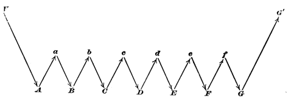

Chapter 10: Habit¶
10.1 Habit¶
Its Importance for Psychology.—There remains a condition of general neural activity so important as to deserve a chapter by itself—I refer to the aptitude of the nerve-centres, especially of the hemispheres, for acquiring habits. An acquired habit, from the physiological point of view, is nothing but a new pathway of discharge formed in the brain, by which certain incoming currents ever after tend to escape. That is the thesis of this chapter; and we shall see in the later and more psychological chapters that such functions as the association of ideas, perception, memory, reasoning, the education of the will, etc., etc., can best be understood as results of the formation de novo of just such pathways of discharge.
Habit has a physical basis. The moment one tries to define what habit is, one is led to the fundamental properties of matter. The laws of Nature are nothing but the immutable habits which the different elementary sorts of matter follow in their actions and reactions upon each other. In the organic world, however, the habits are more variable than this. Even instincts vary from one individual to another of a kind; and are modified in the same individual, as we shall later see, to suit the exigencies of the case. On the principles of the atomistic philosophy the habits of an elementary particle of matter cannot change, because the particle is itself an unchangeable thing; but those of a compound mass of matter can change, because they are in the last instance due to the structure of the compound, and either outward forces or inward tensions can, from one hour to another, turn that structure into something different from what it was. That is, they can do so if the body be plastic enough to maintain its integrity, and be not disrupted when its structure yields. The change of structure here spoken of need not involve the outward shape; it may be invisible and molecular, as when a bar of iron becomes magnetic or crystalline through the action of certain outward causes, or india-rubber becomes friable, or plaster 'sets.' All these changes are rather slow; the material in question opposes a certain resistance to the modifying cause, which it takes time to overcome, but the gradual yielding whereof often saves the material from being disintegrated altogether. When the structure has yielded, the same inertia becomes a condition of its comparative permanence in the new form, and of the new habits the body then manifests. Plasticity, then, in the wide sense of the word, means the possession of a structure weak enough to yield to an influence, but strong enough not to yield all at once. Each relatively stable phase of equilibrium in such a structure is marked by what we may call a new set of habits. Organic matter, especially nervous tissue, seems endowed with a very extraordinary degree of plasticity of this sort; so that we may without hesitation lay down as our first proposition the following: that the phenomena of habit in living beings are due to the plasticity of the organic materials of which their bodies are composed.
The philosophy of habit is thus, in the first instance, a chapter in physics rather than in physiology or psychology. That it is at bottom a physical principle, is admitted by all good recent writers on the subject. They call attention to analogues of acquired habits exhibited by dead matter. Thus, M. Léon Dumont writes:
"Every one knows how a garment, after having been worn a certain time, clings to the shape of the body better than when it was new; there has been a change in the tissue, and this change is a new habit of cohesion. A lock works better after being used some time; at the outset more force was required to overcome certain roughness in the mechanism. The overcoming of their resistance is a phenomenon of habituation. It costs less trouble to fold a paper when it has been folded already; ... and just so in the nervous system the impressions of outer objects fashion for themselves more and more appropriate paths, and these vital phenomena recur under similar excitements from without, when they have been interrupted a certain time."
Not in the nervous system alone. A scar anywhere is a locus minoris resistentiæ, more liable to be abraded, inflamed, to suffer pain and cold, than are the neighboring parts. A sprained ankle, a dislocated arm, are in danger of being sprained or dislocated again; joints that have once been attacked by rheumatism or gout, mucous membranes that have been the seat of catarrh, are with each fresh recurrence more prone to a relapse, until often the morbid state chronically substitutes itself for the sound one. And in the nervous system itself it is well known how many so-called functional diseases seem to keep themselves going simply because they happen to have once begun; and how the forcible cutting short by medicine of a few attacks is often sufficient to enable the physiological forces to get possession of the field again, and to bring the organs back to functions of health. Epilepsies, neuralgias, convulsive affections of various sorts, insomnias, are so many cases in point. And, to take what are more obviously habits, the success with which a 'weaning' treatment can often be applied to the victims of unhealthy indulgence of passion, or of mere complaining or irascible disposition, shows us how much the morbid manifestations themselves were due to the mere inertia of the nervous organs, when once launched on a false career.
Habits are due to pathways through the nerve-centres. If habits are due to the plasticity of materials to outward agents, we can immediately see to what outward influences, if to any, the brain-matter is plastic. Not to mechanical pressures, not to thermal changes, not to any of the forces to which all the other organs of our body are exposed; for, as we saw on pp. 9-10, Nature has so blanketed and wrapped the brain about that the only impressions that can be made upon it are through the blood, on the one hand, and the sensory nerve-roots, on the other; and it is to the infinitely attenuated currents that pour in through these latter channels that the hemispherical cortex shows itself to be so peculiarly susceptible. The currents, once in, must find a way out. In getting out they leave their traces in the paths which they take. The only thing they can do, in short, is to deepen old paths or to make new ones; and the whole plasticity of the brain sums itself up in two words when we call it an organ in which currents pouring in from the sense-organs make with extreme facility paths which do not easily disappear. For, of course, a simple habit, like every other nervous event—the habit of snuffling, for example, or of putting one's hands into one's pockets, or of biting one's nails—is, mechanically, nothing but a reflex discharge; and its anatomical substratum must be a path in the system. The most complex habits, as we shall presently see more fully, are, from the same point of view, nothing but concatenated discharges in the nerve-centres, due to the presence there of systems of reflex paths, so organized as to wake each other up successively—the impression produced by one muscular contraction serving as a stimulus to provoke the next, until a final impression inhibits the process and closes the chain.
It must be noticed that the growth of structural modification in living matter may be more rapid than in any lifeless mass, because the incessant nutritive renovation of which the living matter is the seat tends often to corroborate and fix the impressed modification, rather than to counteract it by renewing the original constitution of the tissue that has been impressed. Thus, we notice after exercising our muscles or our brain in a new way, that we can do so no longer at that time; but after a day or two of rest, when we resume the discipline, our increase in skill not seldom surprises us. I have often noticed this in learning a tune; and it has led a German author to say that we learn to swim during the winter, and to skate during the summer.
Practical Effects of Habit.—First, habit simplifies our movements, makes them accurate, and diminishes fatigue.
Man is born with a tendency to do more things than he has ready-made arrangements for in his nerve-centres. Most of the performances of other animals are automatic. But in him the number of them is so enormous that most of them must be the fruit of painful study. If practice did not make perfect, nor habit economize the expense of nervous and muscular energy, he would be in a sorry plight. As Dr. Maudsley says:1
"If an act became no easier after being done several times, if the careful direction of consciousness were necessary to its accomplishment on each occasion, it is evident that the whole activity of a lifetime might be confined to one or two deeds—that no progress could take place in development. A man might be occupied all day in dressing and undressing himself; the attitude of his body would absorb all his attention and energy; the washing of his hands or the fastening of a button would be as difficult to him on each occasion as to the child on its first trial; and he would, furthermore, be completely exhausted by his exertions. Think of the pains necessary to teach a child to stand, of the many efforts which it must make, and of the ease with which it at last stands, unconscious of any effort. For while secondarily-automatic acts are accomplished with comparatively little weariness—in this regard approaching the organic movements, or the original reflex movements—the conscious effort of the will soon produces exhaustion. A spinal cord without ... memory would simply be an idiotic spinal cord.... It is impossible for an individual to realize how much he owes to its automatic agency until disease has impaired its functions."
Secondly, habit diminishes the conscious attention with which our acts are performed.
One may state this abstractly thus: If an act require for its execution a chain, A, B, C, D, E, F, G, etc., of successive nervous events, then in the first performances of the action the conscious will must choose each of these events from a number of wrong alternatives that tend to present themselves; but habit soon brings it about that each event calls up its own appropriate successor without any alternative offering itself, and without any reference to the conscious will, until at last the whole chain, A, B, C, D, E, F, G, rattles itself off as soon as A occurs, just as if A and the rest of the chain were fused into a continuous stream. Whilst we are learning to walk, to ride, to swim, skate, fence, write, play, or sing, we interrupt ourselves at every step by unnecessary movements and false notes. When we are proficients, on the contrary, the results follow not only with the very minimum of muscular action requisite to bring them forth, but they follow from a single instantaneous 'cue.' The marksman sees the bird, and, before he knows it, he has aimed and shot. A gleam in his adversary's eye, a momentary pressure from his rapier, and the fencer finds that he has instantly made the right parry and return. A glance at the musical hieroglyphics, and the pianist's fingers have rippled through a shower of notes. And not only is it the right thing at the right time that we thus involuntarily do, but the wrong thing also, if it be an habitual thing. Who is there that has never wound up his watch on taking off his waistcoat in the daytime, or taken his latch-key out on arriving at the door-step of a friend? Persons in going to their bedroom to dress for dinner have been known to take off one garment after another and finally to get into bed, merely because that was the habitual issue of the first few movements when performed at a later hour. We all have a definite routine manner of performing certain daily offices connected with the toilet, with the opening and shutting of familiar cupboards, and the like. But our higher thought-centres know hardly anything about the matter. Few men can tell off-hand which sock, shoe, or trousers-leg they put on first. They must first mentally rehearse the act; and even that is often insufficient—the act must be performed. So of the questions, Which valve of the shutters opens first? Which way does my door swing? etc. I cannot tell the answer; yet my hand never makes a mistake. No one can describe the order in which he brushes his hair or teeth; yet it is likely that the order is a pretty fixed one in all of us.
These results may be expressed as follows:
In action grown habitual, what instigates each new muscular contraction to take place in its appointed order is not a thought or a perception, but the sensation occasioned by the muscular contraction just finished. A strictly voluntary act has to be guided by idea, perception, and volition, throughout its whole course. In habitual action, mere sensation is a sufficient guide, and the upper regions of brain and mind are set comparatively free. A diagram will make the matter clear:

Let A, B, C, D, E, F, G represent an habitual chain of muscular contractions, and let a, b, c, d, e, f stand for the several sensations which these contractions excite in us when they are successively performed. Such sensations will usually be in the parts moved, but they may also be effects of the movement upon the eye or the ear. Through them, and through them alone, we are made aware whether or not the contraction has occurred. When the series, A, B, C, D, E, F, G, is being learned, each of these sensations becomes the object of a separate act of attention by the mind. We test each movement intellectually, to see if it have been rightly performed, before advancing to the next. We hesitate, compare, choose, revoke, reject, etc.; and the order by which the next movement is discharged is an express order from the ideational centres after this deliberation has been gone through.
In habitual action, on the contrary, the only impulse which the intellectual centres need send down is that which carries the command to start. This is represented in the diagram by V; it may be a thought of the first movement or of the last result, or a mere perception of some of the habitual conditions of the chain, the presence, e.g., of the keyboard near the hand. In the present example, no sooner has this conscious thought or volition instigated movement A, than A, through the sensation a of its own occurrence, awakens B reflexly; B then excites C through b, and so on till the chain is ended, when the intellect generally takes cognizance of the final result. The intellectual perception at the end is indicated in the diagram by the sensible effect of the movement G being represented at G´, in the ideational centres above the merely sensational line. The sensational impressions, a, b, c, d, e, f, are all supposed to have their seat below the ideational level.
Habits depend on sensations not attended to. We have called a, b, c, d, e, f, by the name of 'sensations.' If sensations, they are sensations to which we are usually inattentive; but that they are more than unconscious nerve-currents seems certain, for they catch our attention if they go wrong. Schneider's account of these sensations deserves to be quoted. In the act of walking, he says, even when our attention is entirely absorbed elsewhere, it is doubtful whether we could preserve equilibrium if no sensation of our body's attitude were there, and doubtful whether we should advance our leg if we had no sensation of its movement as executed, and not even a minimal feeling of impulse to set it down. Knitting appears altogether mechanical, and the knitter keeps up her knitting even while she reads or is engaged in lively talk. But if we ask her how this is possible, she will hardly reply that the knitting goes on of itself. She will rather say that she has a feeling of it, that she feels in her hands that she knits and how she must knit, and that therefore the movements of knitting are called forth and regulated by the sensations associated therewithal, even when the attention is called away...." Again: "When a pupil begins to play on the violin, to keep him from raising his right elbow in playing a book is placed under his right armpit, which he is ordered to hold fast by keeping the upper arm tight against his body. The muscular feelings, and feelings of contact connected with the book, provoke an impulse to press it tight. But often it happens that the beginner, whose attention gets absorbed in the production of the notes, lets drop the book. Later, however, this never happens; the faintest sensations of contact suffice to awaken the impulse to keep it in its place, and the attention may be wholly absorbed by the notes and the fingering with the left hand. The simultaneous combination of movements is thus in the first instance conditioned by the facility with which in us, alongside of intellectual processes, processes of inattentive feeling may still go on."
Ethical and Pedagogical Importance of the Principle of Habit.—"Habit a second nature! Habit is ten times nature," the Duke of Wellington is said to have exclaimed; and the degree to which this is true no one probably can appreciate as well as one who is a veteran soldier himself. The daily drill and the years of discipline end by fashioning a man completely over again, as to most of the possibilities of his conduct.
"There is a story," says Prof. Huxley, "which is credible enough, though it may not be true, of a practical joker who, seeing a discharged veteran carrying home his dinner, suddenly called out, 'Attention!' whereupon the man instantly brought his hands down, and lost his mutton and potatoes in the gutter. The drill had been thorough, and its effects had become embodied in the man's nervous structure."
Riderless cavalry-horses, at many a battle, have been seen to come together and go through their customary evolutions at the sound of the bugle-call. Most domestic beasts seem machines almost pure and simple, undoubtingly, unhesitatingly doing from minute to minute the duties they have been taught, and giving no sign that the possibility of an alternative ever suggests itself to their mind. Men grown old in prison have asked to be readmitted after being once set free. In a railroad accident a menagerie-tiger, whose cage had broken open, is said to have emerged, but presently crept back again, as if too much bewildered by his new responsibilities, so that he was without difficulty secured.
Habit is thus the enormous fly-wheel of society, its most precious conservative agent. It alone is what keeps us all within the bounds of ordinance, and saves the children of fortune from the envious uprisings of the poor. It alone prevents the hardest and most repulsive walks of life from being deserted by those brought up to tread therein. It keeps the fisherman and the deck-hand at sea through the winter; it holds the miner in his darkness, and nails the countryman to his log-cabin and his lonely farm through all the months of snow; it protects us from invasion by the natives of the desert and the frozen zone. It dooms us all to fight out the battle of life upon the lines of our nurture or our early choice, and to make the best of a pursuit that disagrees, because there is no other for which we are fitted, and it is too late to begin again. It keeps different social strata from mixing. Already at the age of twenty-five you see the professional mannerism settling down on the young commercial traveller, on the young doctor, on the young minister, on the young counsellor-at-law. You see the little lines of cleavage running through the character, the tricks of thought, the prejudices, the ways of the 'shop,' in a word, from which the man can by-and-by no more escape than his coat-sleeve can suddenly fall into a new set of folds. On the whole, it is best he should not escape. It is well for the world that in most of us, by the age of thirty, the character has set like plaster, and will never soften again.
If the period between twenty and thirty is the critical one in the formation of intellectual and professional habits, the period below twenty is more important still for the fixing of personal habits, properly so called, such as vocalization and pronunciation, gesture, motion, and address. Hardly ever is a language learned after twenty spoken without a foreign accent; hardly ever can a youth transferred to the society of his betters unlearn the nasality and other vices of speech bred in him by the associations of his growing years. Hardly ever, indeed, no matter how much money there be in his pocket, can he even learn to dress like a gentleman-born. The merchants offer their wares as eagerly to him as to the veriest 'swell,' but he simply cannot buy the right things. An invisible law, as strong as gravitation, keeps him within his orbit, arrayed this year as he was the last; and how his better-clad acquaintances contrive to get the things they wear will be for him a mystery till his dying day.
The great thing, then, in all education, is to make our nervous system our ally instead of our enemy. It is to fund and capitalize our acquisitions, and live at ease upon the interest of the fund. For this we must make automatic and habitual, as early as possible, as many useful actions as we can, and guard against the growing into ways that are likely to be disadvantageous to us, as we should guard against the plague. The more of the details of our daily life we can hand over to the effortless custody of automatism, the more our higher powers of mind will be set free for their own proper work. There is no more miserable human being than one in whom nothing is habitual but indecision, and for whom the lighting of every cigar, the drinking of every cup, the time of rising and going to bed every day, and the beginning of every bit of work, are subjects of express volitional deliberation. Full half the time of such a man goes to the deciding, or regretting, of matters which ought to be so ingrained in him as practically not to exist for his consciousness at all. If there be such daily duties not yet ingrained in any one of my readers, let him begin this very hour to set the matter right.
In Professor Bain's chapter on 'The Moral Habits' there are some admirable practical remarks laid down. Two great maxims emerge from his treatment. The first is that in the acquisition of a new habit, or the leaving off of an old one, we must take care to launch ourselves with as strong and decided an initiative as possible. Accumulate all the possible circumstances which shall re-enforce the right motives; put yourself assiduously in conditions that encourage the new way; make engagements incompatible with the old; take a public pledge, if the case allows; in short, envelop your resolution with every aid you know. This will give your new beginning such a momentum that the temptation to break down will not occur as soon as it otherwise might; and every day during which a breakdown is postponed adds to the chances of its not occurring at all.
The second maxim is: Never suffer an exception to occur till the new habit is securely rooted in your life. Each lapse is like the letting fall of a ball of string which one is carefully winding up; a single slip undoes more than a great many turns will wind again. Continuity of training is the great means of making the nervous system act infallibly right. As Professor Bain says:
"The peculiarity of the moral habits, contradistinguishing them from the intellectual acquisitions, is the presence of two hostile powers, one to be gradually raised into the ascendant over the other. It is necessary, above all things, in such a situation, never to lose a battle. Every gain on the wrong side undoes the effect of many conquests on the right. The essential precaution, therefore, is so to regulate the two opposing powers that the one may have a series of uninterrupted successes, until repetition has fortified it to such a degree as to enable it to cope with the opposition, under any circumstances. This is the theoretically best career of mental progress."
The need of securing success at the outset is imperative. Failure at first is apt to damp the energy of all future attempts, whereas past experiences of success nerve one to future vigor. Goethe says to a man who consulted him about an enterprise but mistrusted his own powers: "Ach! you need only blow on your hands!" And the remark illustrates the effect on Goethe's spirits of his own habitually successful career.
The question of "tapering-off," in abandoning such habits as drink and opium-indulgence comes in here, and is a question about which experts differ within certain limits, and in regard to what may be best for an individual case. In the main, however, all expert opinion would agree that abrupt acquisition of the new habit is the best way, if there be a real possibility of carrying it out. We must be careful not to give the will so stiff a task as to insure its defeat at the very outset; but, provided one can stand it, a sharp period of suffering, and then a free time, is the best thing to aim at, whether in giving up a habit like that of opium, or in simply changing one's hours of rising or of work. It is surprising how soon a desire will die of inanition if it be never fed.
"One must first learn, unmoved, looking neither to the right nor left, to walk firmly on the strait and narrow path, before one can begin 'to make one's self over again.' He who every day makes a fresh resolve is like one who, arriving at the edge of the ditch he is to leap, forever stops and returns for a fresh run. Without unbroken advance there is no such thing as accumulation of the ethical forces possible, and to make this possible, and to exercise us and habituate us in it, is the sovereign blessing of regular work."2
A third maxim may be added to the preceding pair: Seize the very first possible opportunity to act on every resolution you make, and on every emotional prompting you may experience in the direction of the habits you aspire to gain. It is not in the moment of their forming, but in the moment of their producing motor effects, that resolves and aspirations communicate the new 'set' to the brain. As the author last quoted remarks:
"The actual presence of the practical opportunity alone furnishes the fulcrum upon which the lever can rest, by means of which the moral will may multiply its strength, and raise itself aloft. He who has no solid ground to press against will never get beyond the stage of empty gesture-making."
No matter how full a reservoir of maxims one may possess, and no matter how good one's sentiments may be, if one have not taken advantage of every concrete opportunity to act, one's character may remain entirely unaffected for the better. With mere good intentions, hell is proverbially paved. And this is an obvious consequence of the principles we have laid down. A 'character,' as J. S. Mill says, 'is a completely fashioned will'; and a will, in the sense in which he means it, is an aggregate of tendencies to act in a firm and prompt and definite way upon all the principal emergencies of life. A tendency to act only becomes effectively ingrained in us in proportion to the uninterrupted frequency with which the actions actually occur, and the brain 'grows' to their use. When a resolve or a fine glow of feeling is allowed to evaporate without bearing practical fruit it is worse than a chance lost; it works so as positively to hinder future resolutions and emotions from taking the normal path of discharge. There is no more contemptible type of human character than that of the nerveless sentimentalist and dreamer, who spends his life in a weltering sea of sensibility and emotion, but who never does a manly concrete deed. Rousseau, inflaming all the mothers of France, by his eloquence, to follow Nature and nurse their babies themselves, while he sends his own children to the foundling hospital, is the classical example of what I mean. But every one of us in his measure, whenever, after glowing for an abstractly formulated Good, he practically ignores some actual case, among the squalid 'other particulars' of which that same Good lurks disguised, treads straight on Rousseau's path. All Goods are disguised by the vulgarity of their concomitants, in this work-a-day world; but woe to him who can only recognize them when he thinks them in their pure and abstract form! The habit of excessive novel-reading and theatre-going will produce true monsters in this line. The weeping of the Russian lady over the fictitious personages in the play, while her coachman is freezing to death on his seat outside, is the sort of thing that everywhere happens on a less glaring scale. Even the habit of excessive indulgence in music, for those who are neither performers themselves nor musically gifted enough to take it in a purely intellectual way, has probably a relaxing effect upon the character. One becomes filled with emotions which habitually pass without prompting to any deed, and so the inertly sentimental condition is kept up. The remedy would be, never to suffer one's self to have an emotion at a concert, without expressing it afterward in some active way. Let the expression be the least thing in the world—speaking genially to one's grandmother, or giving up one's seat in a horse-car, if nothing more heroic offers—but let it not fail to take place.
These latter cases make us aware that it is not simply particular lines of discharge, but also general forms of discharge, that seem to be grooved out by habit in the brain. Just as, if we let our emotions evaporate, they get into a way of evaporating; so there is reason to suppose that if we often flinch from making an effort, before we know it the effort-making capacity will be gone; and that, if we suffer the wandering of our attention, presently it will wander all the time. Attention and effort are, as we shall see later, but two names for the same psychic fact. To what brain-processes they correspond we do not know. The strongest reason for believing that they do depend on brain-processes at all, and are not pure acts of the spirit, is just this fact, that they seem in some degree subject to the law of habit, which is a material law. As a final practical maxim, relative to these habits of the will, we may, then, offer something like this: Keep the faculty of effort alive in you by a little gratuitous exercise every day. That is, be systematically ascetic or heroic in little unnecessary points, do every day or two something for no other reason than that you would rather not do it, so that when the hour of dire need draws nigh, it may find you not unnerved and untrained to stand the test. Asceticism of this sort is like the insurance which a man pays on his house and goods. The tax does him no good at the time, and possibly may never bring him a return. But if the fire does come, his having paid it will be his salvation from ruin. So with the man who has daily inured himself to habits of concentrated attention, energetic volition, and self-denial in unnecessary things. He will stand like a tower when everything rocks around him, and when his softer fellow-mortals are winnowed like chaff in the blast.
The physiological study of mental conditions is thus the most powerful ally of hortatory ethics. The hell to be endured hereafter, of which theology tells, is no worse than the hell we make for ourselves in this world by habitually fashioning our characters in the wrong way. Could the young but realize how soon they will become mere walking bundles of habits, they would give more heed to their conduct while in the plastic state. We are spinning our own fates, good or evil, and never to be undone. Every smallest stroke of virtue or of vice leaves its never so little scar. The drunken Rip Van Winkle, in Jefferson's play, excuses himself for every fresh dereliction by saying, 'I won't count this time!' Well! he may not count it, and a kind Heaven may not count it; but it is being counted none the less. Down among his nerve-cells and fibres the molecules are counting it, registering and storing it up to be used against him when the next temptation comes. Nothing we ever do is, in strict scientific literalness, wiped out. Of course this has its good side as well as its bad one. As we become permanent drunkards by so many separate drinks, so we become saints in the moral, and authorities and experts in the practical and scientific spheres, by so many separate acts and hours of work. Let no youth have any anxiety about the upshot of his education, whatever the line of it may be. If he keep faithfully busy each hour of the working day, he may safely leave the final result to itself. He can with perfect certainty count on waking up some fine morning, to find himself one of the competent ones of his generation, in whatever pursuit he may have singled out. Silently, between all the details of his business, the power of judging in all that class of matter will have built itself up within him as a possession that will never pass away. Young people should know this truth in advance. The ignorance of it has probably engendered more discouragement and faint-heartedness in youths embarking on arduous careers than all other causes put together.